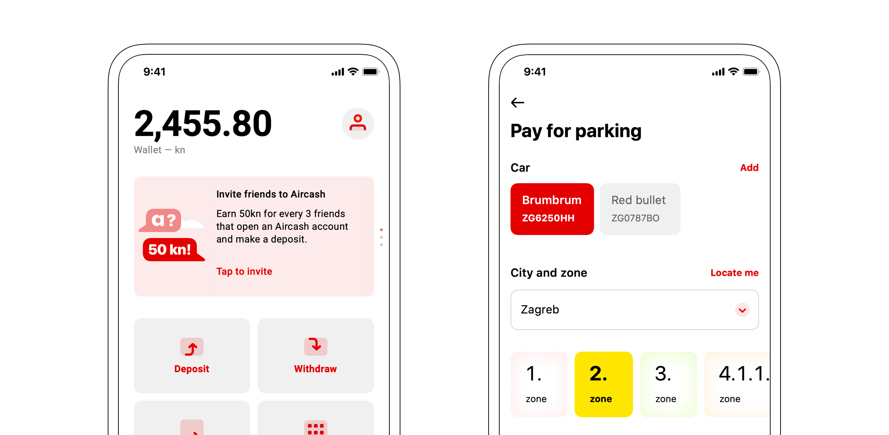
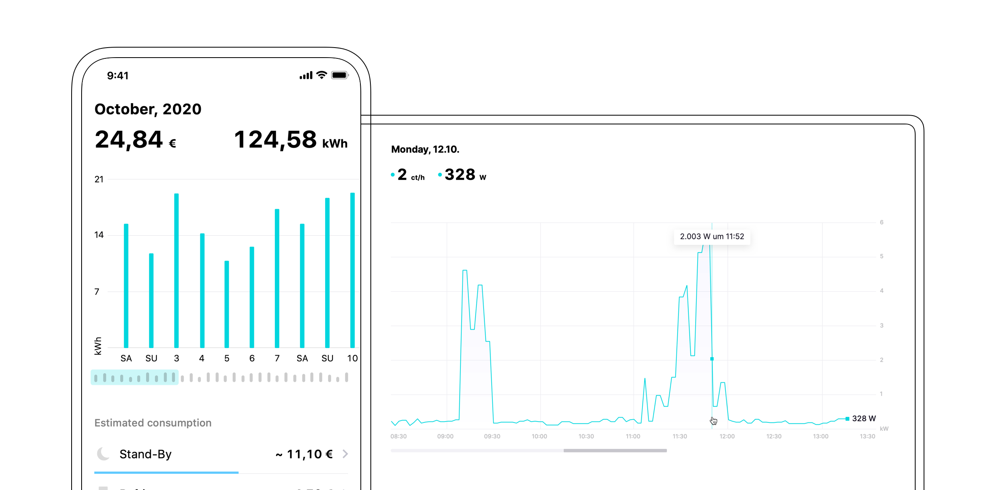
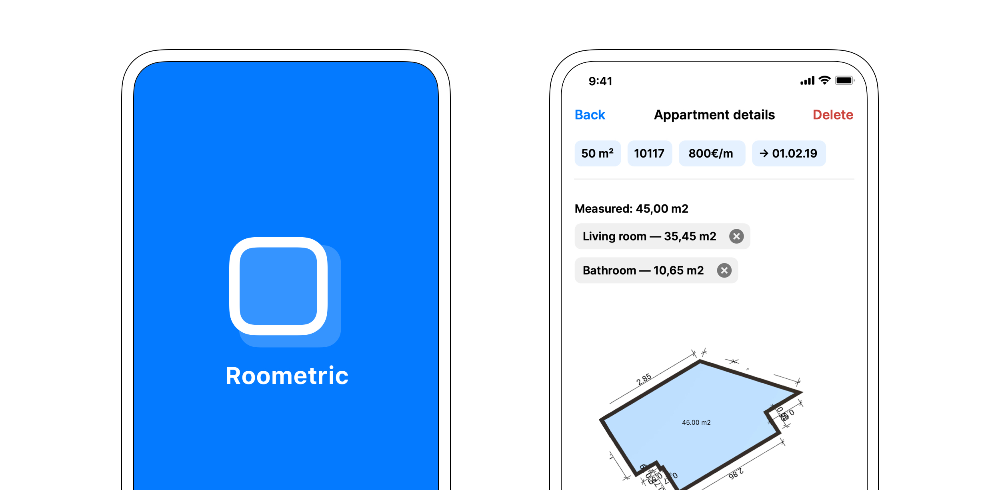
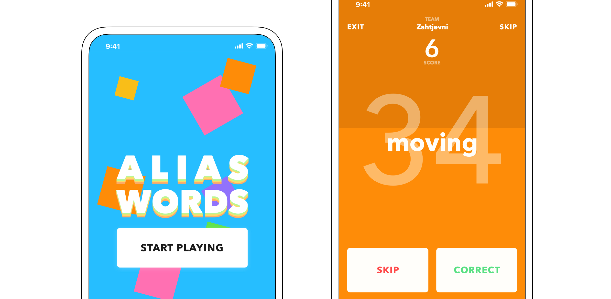
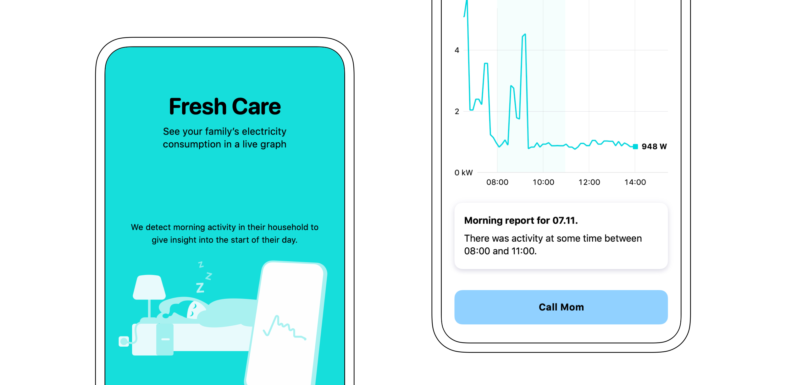
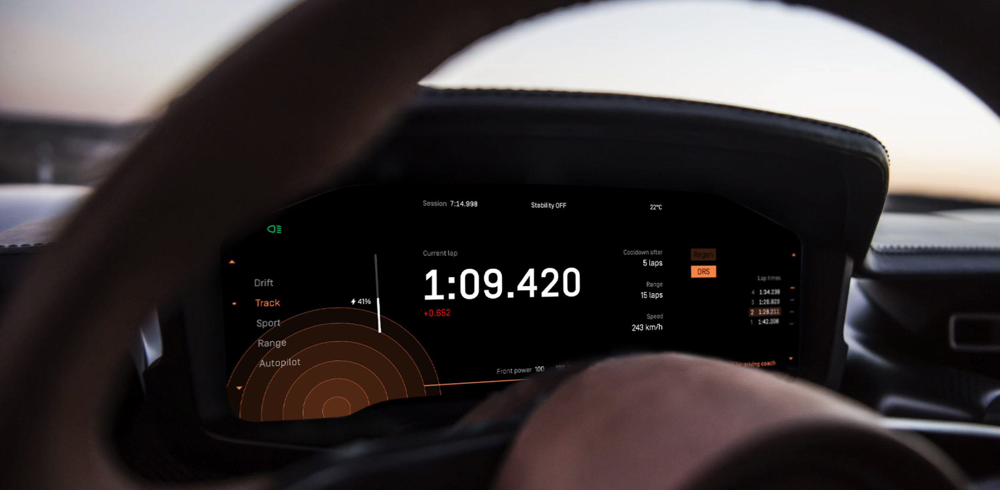

Ivan Škoro design and a bit of art
Drag for info
Aircash is the first mobile wallet in Croatia. Users can top up their account, withdraw cash,
send money and use a multitude of services. I was in charge of reimagining both iOS and Android apps UI&UX —
together with defining and designing completely new features aimed at increasing user retention, user growth, and revenue.
AIRCASH
iOS & Android, UI + UX
 READ CASE STUDY
Drag for info
Fresh Energy builds customer centric products based on smart meter data with a focus on
helping users understand their energy consumption.
Working closely with other departments, I envisioned new features,
redesigned the mobile and desktop experience and delivered public websites.
I was also in charge of a company wide rebrand.
FRESH ENERGY
iOS & Android & Web, UI + UX + Branding
 READ CASE STUDY
Drag for info
Roometric is a startup based in Berlin providing AR measurement solutions.
I designed a step-by-step wizard leading the users through an AR scanning process.
The UX inside AR was tweaked based on industry standards and user testing. Rest of the app was
unified through a new UI design.
ROOMETRIC
iOS & Android, UI + UX
 READ CASE STUDY
Drag for info
Alias Words is a mobile adaptation of a popular party game, Taboo.
I branded the app through the usage of vivid color patterns representing the fun and
unexpected spirit of the game. Gameplay is a pleasure with clear instructions and a nicely integrated game timer.
ALIAS WORDS
iOS & Android, UI + UX
 READ CASE STUDY
Drag for info
Fresh Care uses Smart electricity meters to empower senior users —
by detecting their wellbeing through machine learning, and sending the daily report to their family.
Along with ideating the product from scratch with the product and data-science team,
I was also in charge of the UX and UI.
FRESH CARE
iOS & Android, UI + UX
 READ CASE STUDY
Drag for info
As part of a contest, I redesigned the infotainment system for Rimac Concept Two.
Moving away from outdated design practices of car industry, this winning concept is
rethinking how an instrument cluster should look and behave.
EV HYPERCAR INFOTAINMENT
Automotive, UI + UX
 READ CASE STUDY
Drag for info
B-LA CONNECT is a platform promoting the cooperation and interlinking between the
two sister cities’ creative communities. Over 40 art spaces from Berlin and LA are participating.
I had the pleasure of designing and developing the mobile version of their website.
Web, UI + UX + Development,


Drag for info
The first Croatian brand for personalised accessories.
Each product undergoes a customization process, making it unique. Custom drawn logo reflects that.
Visual identity

Drag for info
1. In Continuo — short film about looking for a place where one belongs.
2. Ships sailing Nowhere — an experimental movie about people without cause.
2. Ships sailing Nowhere — an experimental movie about people without cause.
POSTERS
Communication design